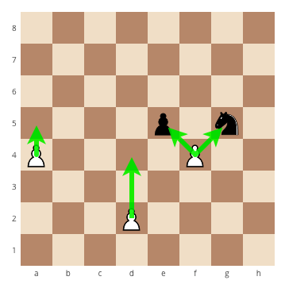

Greetings!
I am Joel!
Anarchy Chess Professional

The pawns sit in front of all pieces of the game on the 2nd and 7th file, depending on if you are playing the white or black pieces. The pawn is also the most complicated piece to move. Normally, it can only move 1 space foward. However, as it's first move, it can choose to move either 1 or 2 spaces foward. Thereafter, it can only move 1 space foward. It captures other pieces diagonally. As shown in the diagram, the pawn can capture the knight or the pawn that is diagonally above it. It is unable to capture backwards.